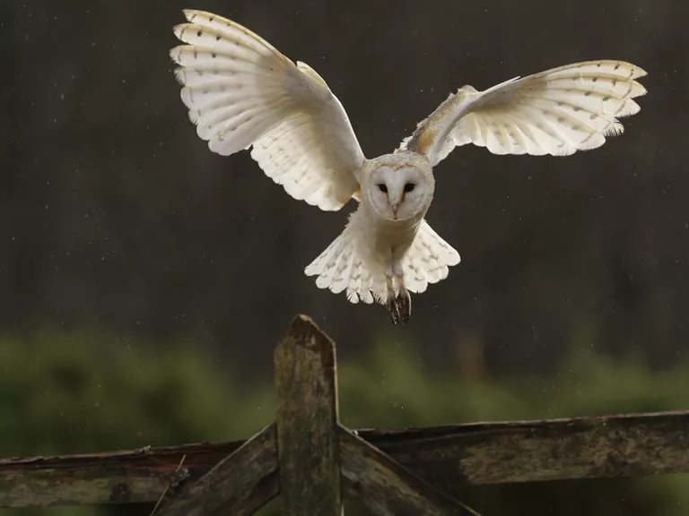
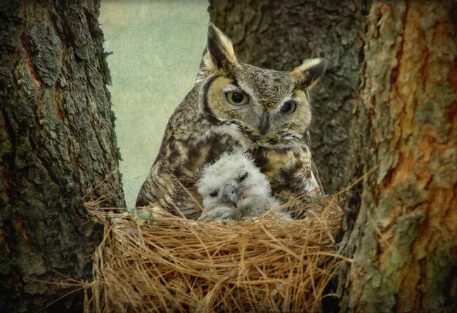
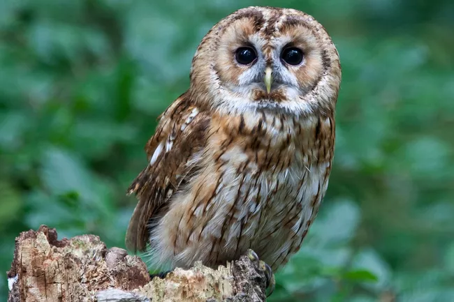

Owls
Hailed for their supposed wisdom and their appetite for pesky rodents but derided as pests and subjects of superstition, owls (families Tytonidae and Strigidae) have had a love/hate relationship with humans since the beginning of recorded history. There are over 200 species of owls, and they might date back to the days of dinosaurs.
There are about 216 species of owls divided into two families: Barn and Bay owls (Tytonidae) and the Strigidae (true owls). Most owls belong to the group of so-called true owls, with large heads and round faces, short tails, and muted feathers with mottled patterns. The remaining dozen-plus species are barn owls, which have heart-shaped faces, long legs with powerful talons, and moderate size. Except for the common barn owl, which is found worldwide, the most familiar owls in North America and Eurasia are the true owls. More than half of the owls in the world live in the neotropics and sub-Saharan Africa, and only 19 species reside in the United States and Canada. One of the most remarkable things about owls is that they move their entire heads when looking at something rather than moving their eyes, like most other vertebrates. Owls need large, forward-facing eyes to gather scarce light during their nocturnal hunts, and evolution couldn't spare the musculature to allow these eyes to rotate. Some owls have astonishingly flexible necks that let them turn their heads three-quarters of a circle, or 270 degrees, compared to 90 degrees for the average human being.
Owls are found on every continent except Antarctica, and they also inhabit many remote island groups including the Hawaiian islands. Their preferred habitats vary from species to species but include everything from arctic tundra to marshlands, deciduous and conifer forests, deserts and agricultural fields, and beaches.
Owls swallow their prey—insects, small mammals and reptiles, and other birds—whole without biting or chewing. Most of the unfortunate animal is digested, but the parts that can't be broken down—such as bones, fur, and feathers—are regurgitated as a hard lump, called a "pellet," a few hours after the owl's meal. By examining these pellets, researchers can identify what a given owl has been eating and when. (Baby owls don't produce pellets since their parents feed them soft, regurgitated food in the nest.) Although other carnivorous birds, such as hawks and eagles, hunt during the day, most owls hunt at night. Their dark colors make them nearly invisible to their prey and their wings beat almost silently. These adaptations, combined with their enormous eyes, put owls among the most efficient night hunters on the planet. As befitting birds that hunt and kill small prey, owls have some of the strongest talons in the avian kingdom, capable of seizing and grasping squirrels, rabbits, and other squirmy mammals. One of the largest owl species, the five-pound great horned owl, can curl its talons with a force of 300 pounds per square inch, roughly comparable to the strongest human bite. Some unusually large owls have talons comparable in size to those of much bigger eagles, which may explain why even desperately hungry eagles usually won't attack their smaller cousins. Inopular culture, owls are invariably depicted as extremely intelligent, but it's virtually impossible to train an owl, while parrots, hawks, and pigeons can be taught to retrieve objects and memorize simple tasks. People think owls are smart for the same reason they think kids who wear glasses are smart: Bigger-than-usual eyes convey the impression of high intelligence. This doesn't mean owls are especially dumb, either; they need lots of brain power to hunt at night.
